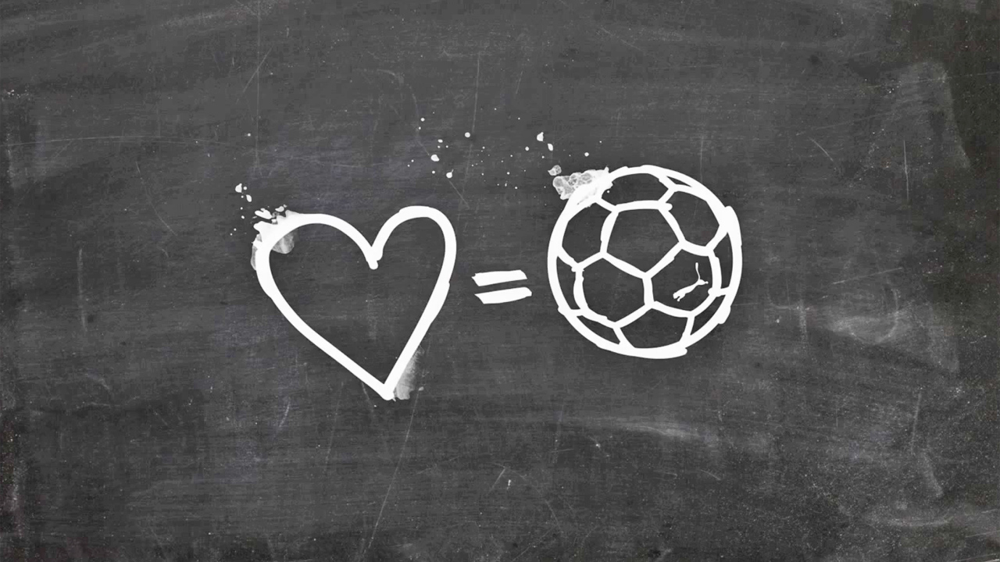

About Me and My Passion for Football
Welcome to my personal space! Here, I share my love for football, my passion for the beautiful game, and the pride I have as a Moroccan. Join me as I celebrate the spirit of football, connect with others who share the same passion, and explore the world of sports from my perspective.
On this blog, I will talk about two of my favorite football teams: Raja Club Athletic and the Moroccan National Team. These teams represent my culture and identity, and I always feel a deep connection when watching them play.
Why People Love Football?
Football brings people together, transcending borders and cultures. It offers excitement, passion, and unforgettable moments, uniting fans in celebration or heartbreak. The sport's simplicity and universal appeal make it accessible to all, while the skill and strategy captivate spectators. Ultimately, football fosters a sense of community and belonging like no other.
Why I like football?
Football is more than just a game, it's a passion that unites us all. As a Moroccan, I’m proud to support our national team and my legendary club Raja Casablanca. Football reflects the resilience, skill, and pride that define our culture. It’s a celebration of moments, memories, and the power of community, bringing people together no matter where they are.
Next Page: Raja Club Athletic